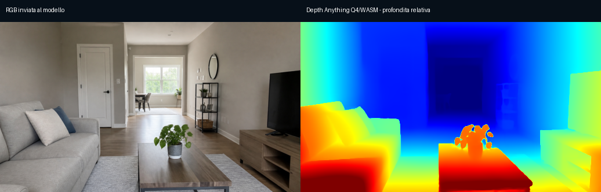

Depth Anything e WebXR, separati
Questa pagina non costruisce una stanza e non fonde dati: serve a verificare i due sottosistemi senza interferenze. Chiudi la prima sessione prima di aprire la seconda.
SESSIONE A · SOLO DEPTH ANYTHING
Foto → worker → mappa di profondità
Usa la fotocamera normale, una foto tua o la foto test inclusa. V11 forza il percorso Q4/WASM verificato: WebXR non viene richiesto e WebGPU Q4F16 non può falsare questo test. Per ogni foto il lato corto viene portato al massimo a 720 px, senza ingrandire immagini più piccole.
Vedi risultato atteso della foto test integrata

Confronta la disposizione di divano, tavolo, pianta, porta e finestra; i colori indicano profondità relativa, non metri.
In attesa
Premi “Carica modello Q4/WASM” e attendi il test smoke prima di analizzare le foto.
SESSIONE B · SOLO WEBXR
Tracking AR e pose
Questa sessione viene avviata solo dopo avere chiuso camera e worker Depth. Non esegue inferenza AI, non richiede immagini e non modifica una mappa.
In attesa: WebXR non ancora richiesto.
LOG DIAGNOSTICO